自我介绍
郭大可 2025
个人信息
基本信息
- 教育背景:
- 西北工业大学本硕,计算机科学与技术，导师：谢磊教授
- 在校研究方向:
- 高表现力有声书合成（HiGNN-TTS、TACA-TTS）
- TTS野生语音数据处理（WenetSpeech4TTS）
- 大型语音生成模型（VALL·E、单/多码本LMTTS）
- 多人对话式语音合成（DialoSpeech）
- 实习经历:
- 小红书 (2024.04–2024.07)：
- E2E音乐合成：数据清洗、codec 重建对比及多码本模型适配。
- 阿里巴巴 (2024.09–至今)：
- 单码本 codec 对比研究
- 流式语音 token 解码方案设计
- vocoder 泛化能力改进及流式推理适配
- 自回归时长预测在 NAR TTS 中的应用研究
表现力有声书合成
HiGNN-TTS: 利用文本结构的表现力有声书合成
- 出发点：韵律表达与文本依存(韵律)结构相关 -> 如何高效利用文本信息？
- 方法
- 依存关系与韵律表达强相关 -> 句法依存图作为先验信息 -> GNN建模
- 层次化的韵律建模 -> 词/句/上下文 -> 虚拟全局节点+上下文 Attention
- 利用文本语义信息 -> Bert Embedding 初始化图节点
- 无监督学习效果差 -> 预训练的 Mel Encoder 做监督
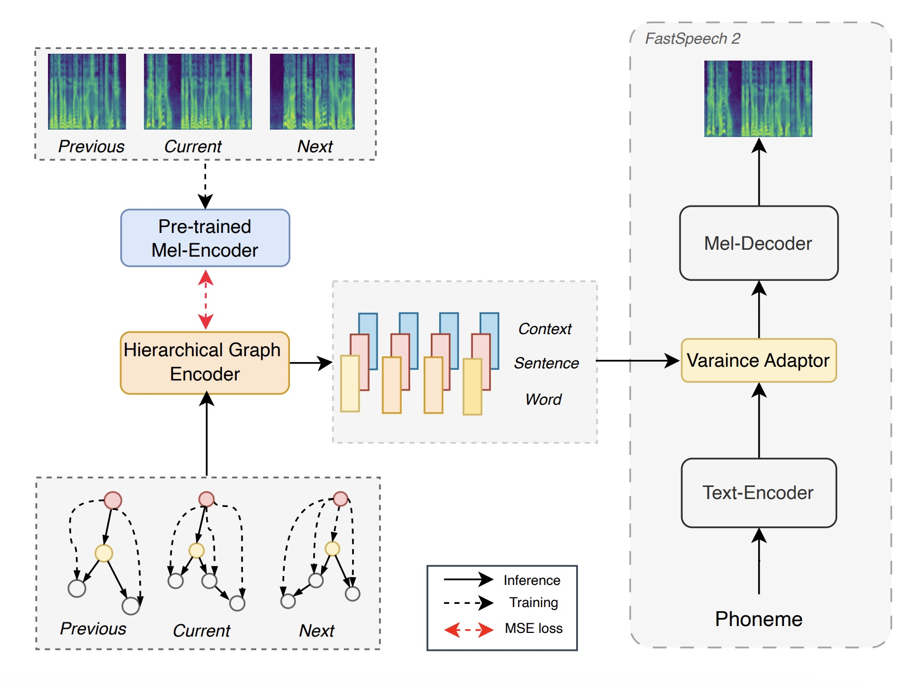
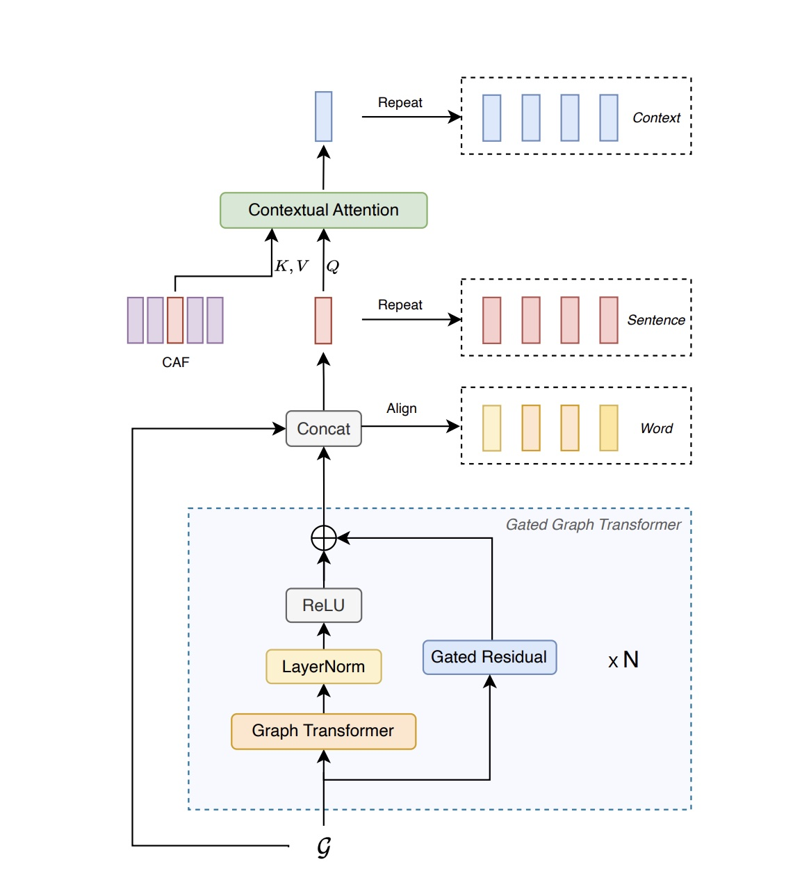
HiGNN-TTS Results
FS2-BERT
HiGNN-TTS
TACA-TTS: 从大量野生数据中建模"文本->风格"映射
- 出发点: 当 AM 和数据固定时，TTS 的表现力上限取决于风格表征的好坏
- 方法：
- AM 对数据质量要求高，联合训练风格表征存在局限性-> 将风格建模从声学模型中解耦，多阶段训练(风格空间构建->"文本-风格"映射->声学模型联调)
- 少量有标注数据+大量无监督数据+对比学习 -> 完备的风格空间
- 大量文本音频对+对比学习+cos loss -> "文本-风格"映射
- 设计context encoder 从文本中编码风格表征，在两种主流声学模型(Vits,LM)上验证有效性
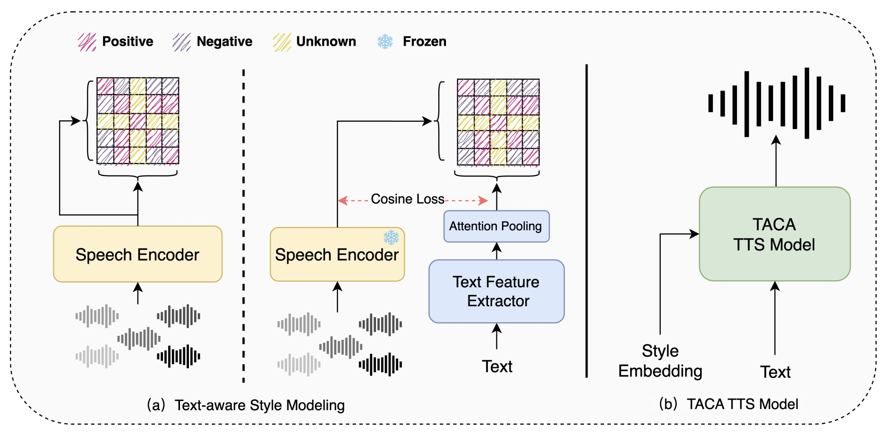
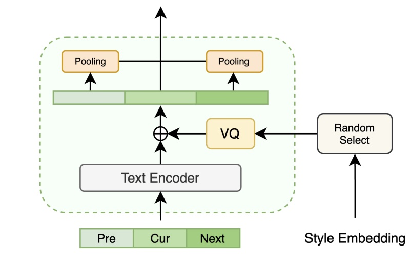
TACA-TTS: 从大量野生数据中建模"文本->风格"映射
- 对比学习正负样例构建：
- 同一句的不同切片→正样例
- 同一类别的不同音频切片→正样例
- 音频风格表征间相似度，大于α→正样例，小于β→负样例
- 声学模型设计：
风格空间构建：
文本-风格映射：
 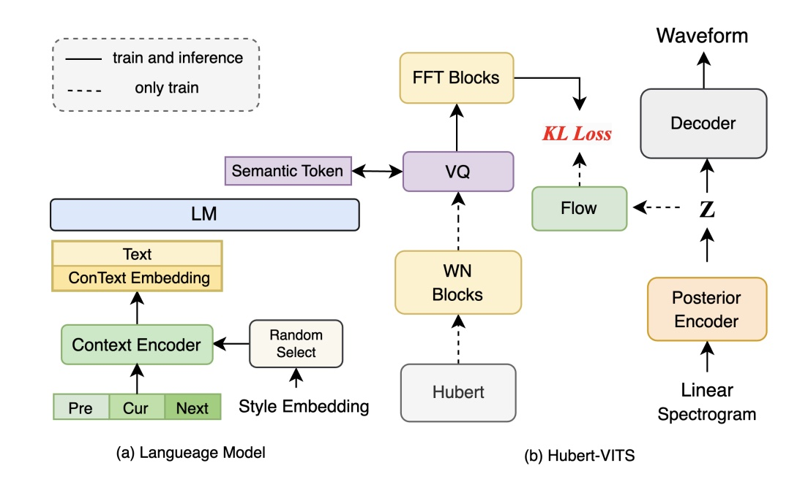
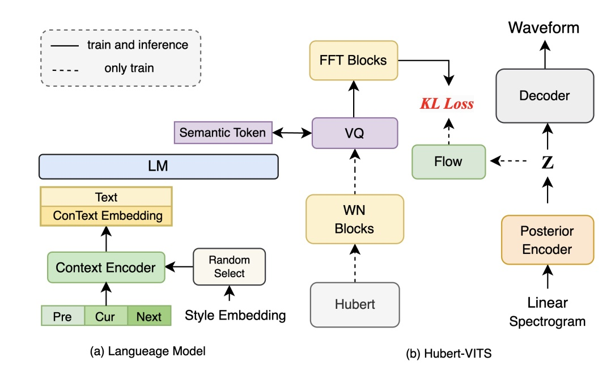
TACA-TTS Results
VITS
TACA-VITS
LM
TACA-LM
流式语音生成
StreamFlow：Flow-matching流式解码方案
- 出发点: ASR token提升了LM的性，但后端解码依赖Flow-matching -> 难以满足实时性要求
- 方法：
- 架构调整:
UNet+Transfomer-> DiTs (利于模型感受野控制) - 流式 != causal != AR, 流式模型可以拥有未来感受野
- 临近token -> block, 以 block 为基本单元通过mask控制感受野
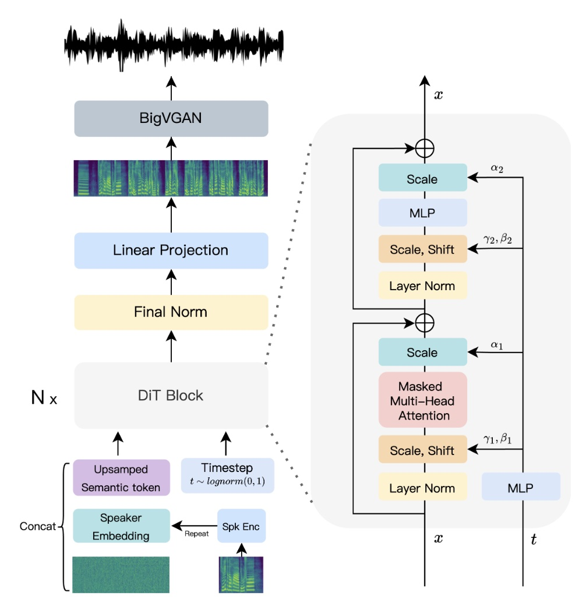
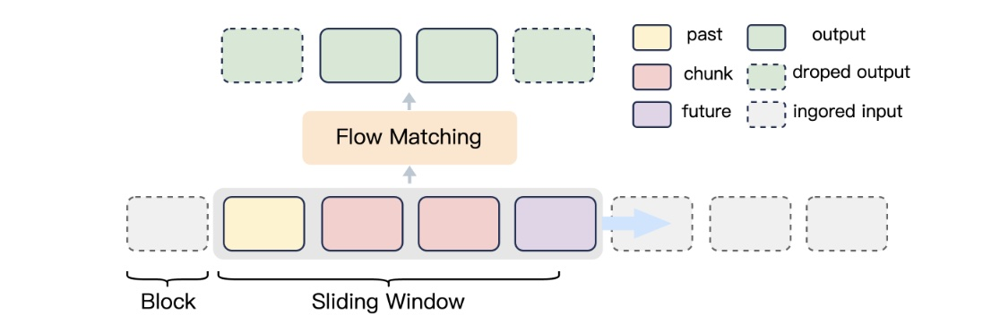
StreamFlow：Flow-matching流式解码方案
- 三种典型mask：
- Block Mask: block内可见，不改变感受野
- Backward Mask: 可见历史 block，将感受野向历史扩张
- Forward Mask: 可见未来 block 将感受野向未来扩张
- 三种mask在DiT block中自由分配，可以精确的控制模型整体可见范围（类似卷积）
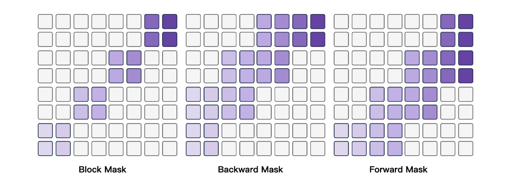
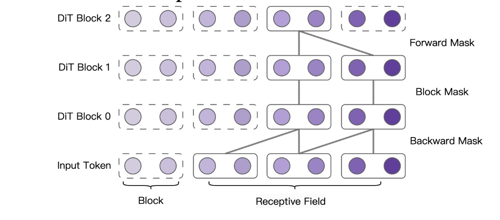
Token2wav 是比较local，对全局感受野的需求不大
StreamFlow Results
Non-Streaming
Streaming
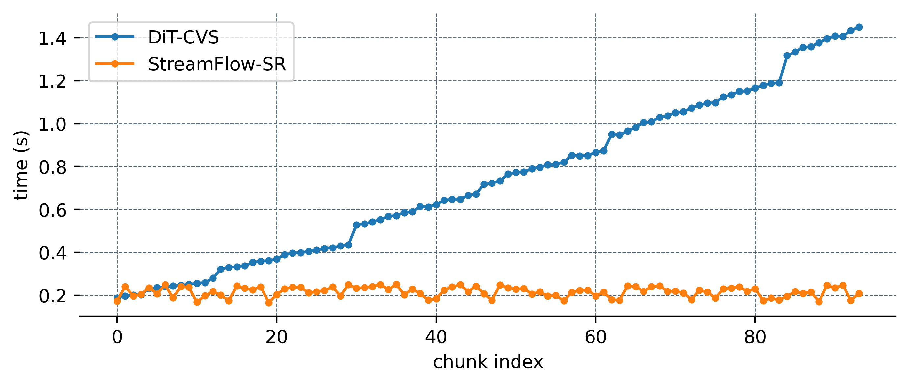
Vocoder 流式适配
- 现有问题：
- 现有BigVGAN未来感受野过大，首包留存率过低 (时延)
- 通过Overlap + Fade-in & Fade-out可以缩减感受野，但会引入由相位冲突导致的爆破音 (流式)
- Causal-BigVGAN 音质下降严重 (音质)
- 混合Causal卷积与正常卷积! 构造不对称感受野
- 底层ResBlock -> 替换为Causal，通过3*1卷积补偿感受野
- 高层ResBlock -> 缩减dilation，压缩感受野
- 转置卷积保持不变（Causal化后音质下降）
Trade-off: 在维持较高的首包留存率的前提下，如何提升流式生成的音质？🧐
- 结果：
- 感受野（帧）：33+33 -> 51+11
- 首包留存率（40帧）：0.175 -> 0.725
- 音质（PESQ）：3.89 -> 3.81
FlexSpeech
FlexSpeech: AR与NAR相结合的尝试
- 出发点：AR更擅长韵律表达，NAR有更好地稳定性、可控性，如何结合二者的优势？
- 方法：
- 音素建模，DiT为主干网络，Flow-matching还原为mel
- Encoder-Decoder结构预测离散化时长，Encoder加入mlm建模，提升语义理解能力，Decoder自回归预测
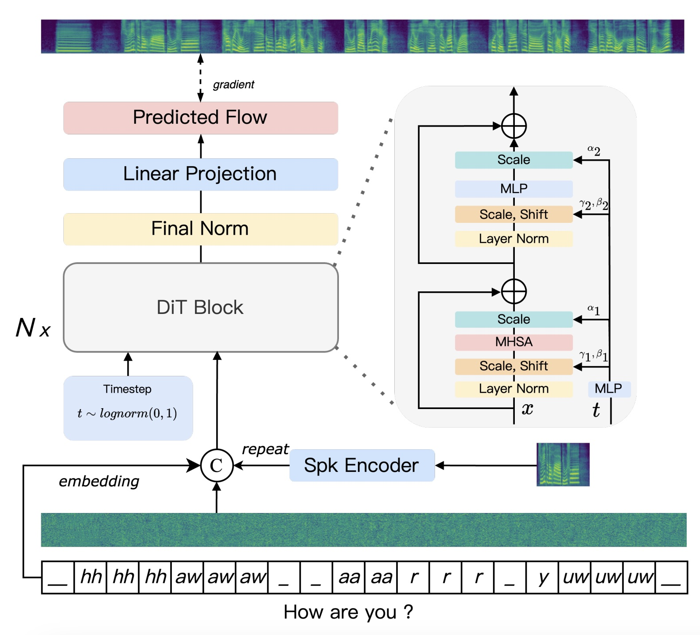
FlexSpeech: AR与NAR相结合的尝试
- 韵律风格不好 != 时长模型预测差，时长模型预测的时长不符合主观偏好
- 通过DPO实现偏好优化。sft loss维持知识，只在差异时长上计算dpo loss
- 少量人工标注偏好数据 -> 提高稳定性&主观听感
- 少量风格偏好数据 -> 快速风格迁移
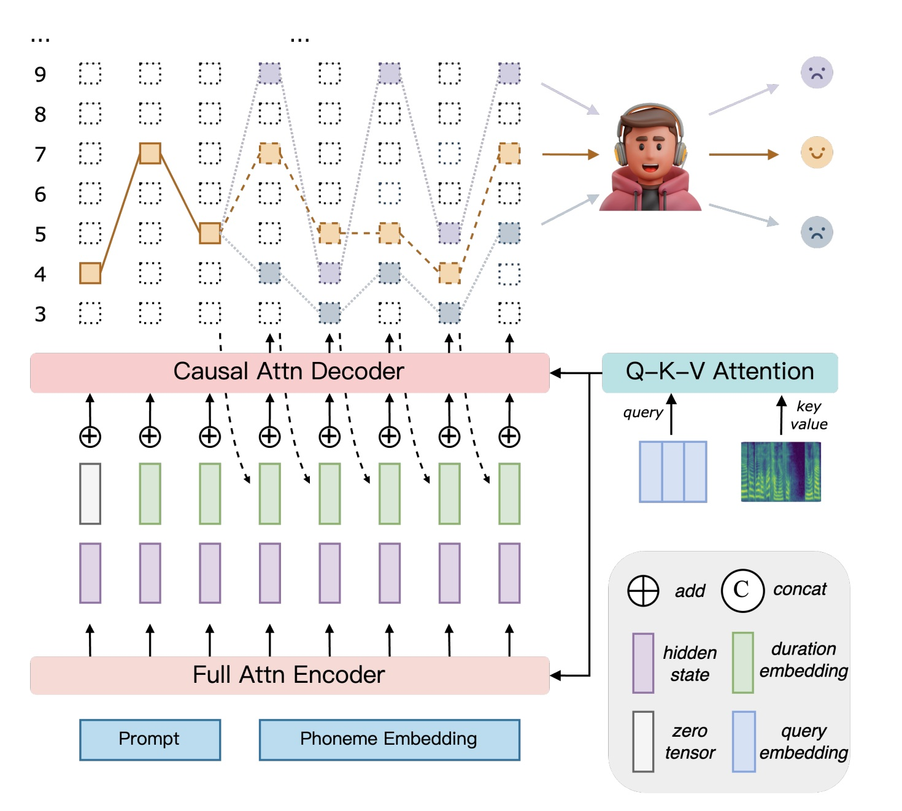
FlexSpeech Results
零样本克隆
Reference
FlexSpeech
风格迁移
Reference
Results